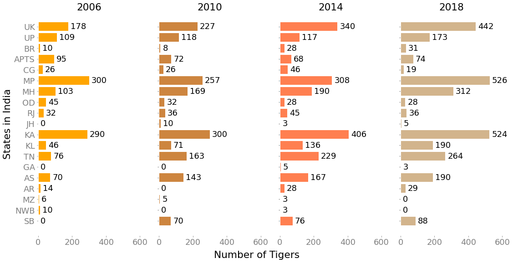

The huge variety of life on Earth contributes to our lives and well-being in more ways than we think. From offering a wealth of natural medicines to safeguarding us from climate shocks and improving soil health, we need wildlife for our survival, well-being and prosperity.
However, the way we live and work – from the food we eat to how we build our infrastructure – is causing a steep decline in their numbers. In the past 40 years alone, we’ve seen, on average, a decline of 60 per cent in populations of species (World Wildlife Fund).
The tiger is a unique animal which plays a pivotal role in the health and diversity of an ecosystem. It is a top predator which is at the apex of the food chain and keeps the population of wild ungulates in check, thereby maintaining the balance between prey herbivores and the vegetation upon which they feed.
The extinction of this top predator is an indication that its ecosystem is not sufficiently protected, and neither would it exist for long thereafter (WWF India).
Healthy tiger habitats help mitigate climate change, provide fresh water to animals and people, reduce the impact of natural disasters, and improve the health of local people. The presence and promise of tigers motivate governments to help protect Asia’s forests. Tiger landscapes overlap nine major watersheds that provide water for as many as 830 million people in Asia, including in urban areas in India, Malaysia, Indonesia, and Thailand. Protecting tigers means protecting vital fresh water sources and functions. More than 30% of Asian elephant populations live within tiger landscapes, including in Bhutan, India, Indonesia, Malaysia, Myanmar, Nepal, and Thailand. That means protecting tiger habitats is important for elephants, too. And all Sumatran rhinos and Sumatran orangutans—both critically endangered—live within the tiger’s range. Where tigers thrive, so do other diverse plants and animals. When we invest in wild tigers, we can help save many other species(World Wildlife Fund).
In India, tigers inhabit a wide variety of habitats ranging from the high mountains, mangrove swamps, tall grasslands, to dry and moist deciduous forests, as well as evergreen forest systems. By virtue of this, the tiger is not only a conservation icon but also acts as an umbrella species for majority of eco-regions in the Indian subcontinent.
India accounts for over 70% of the global tiger population, and has had major success with its tiger conservation efforts. Project Save Our Tigers, a joint initiative between WCT, NDTV, Aircel and Sanctuary Asia, took off in 2008, and has implemented multiple stages of their conservation program in collaboration with governmental and non-governmental organizations to bring the tiger population in India back from the brink of extinction. The success of India in conserving and doubling its wild tiger population in a span of about 12 years is commendable especially when the tiger is highly threatened globally due to the high illegal demand of its body parts. The extremely low number of 1411 tigers in 2006 is what spurred the Indian government into action, and based on current data, the tiger population now stands at 2967, more than double of that in 2006.
Every four years, India takes stock of its tiger population. This exercise is of massive scale in terms of area covered and personnel involved. It uses cutting edge science and technology to evaluate tiger habitat across 18 tiger bearing states of India (NCTA Tiger Status Report). Below, we visualize this data in a number of ways to provide further insights and analysis.
India is made up of 29 states and 7 union territories, with tiger populations existing in 18 of these areas. This interactive visualization shows the tiger population for each state in each year (2006/2010/2014/2018). Readers can select the year they want to see the data for, from the buttons on the upper-left side. Hovering on the state also shows the exact population. The colour indicates the magnitude of the population. A geographic overview allows readers to associate states with the tiger populations, as well as spot geographic trends in populations. For instance, Madhya Pradesh, Maharashtra, and Karnataka, have some of the highest tiger populations in every period. This arises from the fact that they also have the largest number of tiger reserves, with 6 in Madhya Pradesh (Bandhavgarh, Kanha, Panna, Pench, Satpuda and Sanjay Dubri), 6 in Maharashtra (Bor, Melghat, Navegoan Nagzira, Pench, Sahyadri and Tadoba) and 5 in Karnataka (Bandipur, Bhadra, Biligiri, Anshi Dandeli and Nagarhole). The Bandipur, Bandhavgarh and Tadoba reserves account for the maximum population in each of these states.
While the previous visualization showed tiger population for each region in a year, this visualization provides a comparative view of whether populations have increased or decreased as compared to the previous year. Large increases or decreases in populations might be cause for concern, and warrant further exploration. This visualization shows readers the change in population over a period of 4 years, with increases in shades of blue and decreases in shades of red. Hovering on the states shows the exact number, with a negative sign preceding the number indicating a decrease. The upper-left corner buttons allow readers to select which period they would like to see the data for. Again, this visualization helps in viewing geographic trends and analysing the reason behind increase or decrease in population. For instance, we see the decrease in population from 2006-2010 for Madhya Pradesh, which is attributed to increased urbanization and human settlements and loss of forest area. In many of these areas, the loss in forest coincided with mining activity, National and state highways development and with disturbance caused by political insurgencies. Thus, this indicates the need for the establishment of wildlife corridors to ensure tiger conservation. However, Maharashtra tiger reserves saw increased tiger colonization in the same period, and hence saw an increase in the tiger population.
Each bubble shows the tiger population for a particular year in a particular state. Hovering on the bubbles shows the exact number and the year. The blue bubble shows the state with the largest population that year, and the red bubble shows the state with the least. Readers can click on the Play button to see the animated scatterplot. Viewing the graphs for every year shows the clear increase in tiger population over time, showing the positive impact of the conservation effort. It also shows a view of the populations irrespective of the geographic size of the region. The states are still ordered by region, hence also showing that the central and southern regions of India, near the center of the graph, have the highest populations.
Note: The full names of the state abbreviations are given in the Footnotes at the end of this webpage. These are consistent for all visualizations given on this webpage.
We attempt to show a trend line for every state over a period of 12 years, from 2006-2018. Using state-wise data over the years, we use a stacked line chart to show the change in tiger population over time. States (in different colours for distinguishing) can be selected/deselected from the right side. Hovering on the circle marks on the graph shows the exact population in that year for that state, along with the state name. Viewing the graphs for every state over time can help us see which states are succeeding and which states need to amp up their conservation efforts. Odisha, for instance, has done poorly, with numbers falling from 45 to 28, whereas Madhya Pradesh has done excellently, with tiger numbers rising from 300 to 526. We further group the states by regions, allowing further analysis. For instance, the eastern region comprising Assam, Arunachal Pradesh, Mizoram and Northern West Bengal has not seen much increase over the twelve year period. However, in comparison, the southern region of Karnataka, Kerala, and Tamil Nadu has seen a consistent increase. The regions are space-separated vertically on the right-hand side, and clicking on any one state in a region shows the trendlines for all the states of that region. Clicking on a visible region in the legend makes it invisible.
Multiline charts arranged similar to the geographic location of these states on the India map show the trend line for all states at one glance. The regions are further colour-coded and visible on the legend on the right-hand side. Clicking on any particular state in the legend hides the trendline for that state. A double-click on the state name in the legend isolates the graph for that particular state, hiding the remaining graphs.
The racing bar chart provides a holistic data story in a concise and easy to understand format. It shows the overall population trend from 2006-2018 for all the states with tiger populations. The Play button on the bottom-left allows readers to start the animation, and the Stop button allows them to pause and focus on the chart if required. Hovering on the bar for any state shows the details of the tiger population in that year. A double-click on any one state isolates that state, whereas a single-click hides it from the chart.
This visualization offers a complete overview of tiger populations over 12 years, for 18 Indian states and the Sunderbans. Looking at the data at one glance, we can see which states have done well, and which states have done poorly. States like Karnataka, Uttarakhand, and Kerala have seen a steady increase in tiger population. This is a positive sign that conservation campaigns are working well in these states. These can thus serve as examples for states like Orissa and Andhra Pradesh, where numbers have fallen. Arunachal Pradesh and Goa have bounced back from zero populations, suggesting bringing new tigers into states for breeding and raising tiger population might be a feasible conservation technique. Thus, seeing this data at a glance can help readers understand where future efforts need to be concentrated, and what different techniques might work best in which states.

Tiger population data was taken from the Government of India’s open source data platform data.gov.in, and latest data for 2018 was integrated from the National Tiger Conservation Authority’s Tiger Status Report published in 2019.
Our interactive explainer project aims to raise awareness about tiger conservation efforts. By providing multiple interactive visualizations, we aim to reach a wide range of readers, informing them about the extent to which these conservation efforts were successful and in addition help them provide insights on how they can be improved in the future. Further, we hope this helps biologists, wildlife conservationists, and policy makers find trends and analyse how conservation efforts have fared in several states and regions in India over time and where such efforts might need to be improved. We also hope that analysis of such data helps emphasize the need for conservation data to be more easily available on public forums.
Previous data gathered by the National Tiger Conservation Authority in tiger status evaluation exercises resulted in major changes in policy and management of tiger populations and provided scientific data to fully implement provisions of the Wildlife (Protection) Act 1972, as amended in 2006. The major outcomes that were direct or indirect consequence of information generated by the monitoring exercises were tiger landscape conservation plans, designation and notification of inviolate critical core and buffer areas of tiger reserves, and identification and declaration of new tiger reserves, among other results. Thus, visualization and analysis of such efforts can help in the creation of better policies and measures for wildlife conservation.
For future work, we would like to perform such analysis on a global scale, and for multiple species. We would also like to combine the analysis of various socio-political and environmental factors with such conservation campaigns that can help provide a better understanding of where efforts need to be concentrated and what policies need to be formulated. We hope such projects raise awareness about wildlife conservation while also helping wildlife organizations, conservationists, and governments review and improve their conservation efforts.
The order of the states in the plots is based on their regions in India. The full names for the state abbreviations are given in the table below along with the region to which they belong. In addition, it is to be noted that not all states are given in the table. This is due to the fact that either tiger populations do not exist in the missing states or a count survey was not done in these states.
| No. | State abbreviation | State full form | Region |
|---|---|---|---|
| 1 | UK | Uttarakhand | Shivalik-Gangetic plain |
| 2 | UP | Uttar Pradesh | Shivalik-Gangetic plain |
| 3 | BR | Bihar | Shivalik-Gangetic plain |
| 4 | APTS | Andhra Pradesh and Telangana* | Central Indian |
| 5 | CG | Chattisgarh | Central Indian |
| 6 | MP | Madhya Pradesh | Central Indian |
| 7 | MH | Maharashtra | Central Indian |
| 8 | OD | Odisha | Central Indian |
| 9 | RJ | Rajasthan | Central Indian |
| 10 | JH | Jharkhand | Central Indian |
| 11 | KA | Karnataka | Western Ghats |
| 12 | KL | Kerala | Western Ghats |
| 13 | TN | Tamil Nadu | Western Ghats |
| 14 | GA | Goa | Western Ghats |
| 15 | AS | Assam | North East Hills and Brahmaputra |
| 16 | AR | Arunachal Pradesh | North East Hills and Brahmaputra |
| 17 | MZ | Mizoram | North East Hills and Brahmaputra |
| 18 | NWB | Northern West Bengal | North East Hills and Brahmaputra |
| 19 | SB | Sunderbans | Sunderbans |
* The two states Andhra Pradesh and Telangana were separated in 2014. To keep the tiger count consistent for
the years before 2014, the total count is combined for these two states for each year (for
which data is available). Hence they are abbreviated together as APTS.
For further information on tiger conservation in India, we recommend the comprehensive report published by the National Tiger Conservation Authority in India available here.
Further information on wildlife conservation can also be found on these websites:
WWF India and WWF